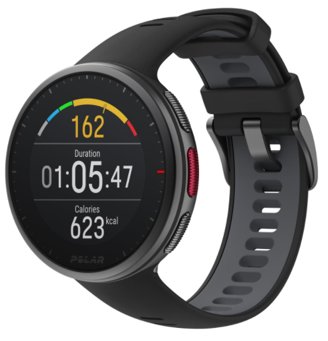
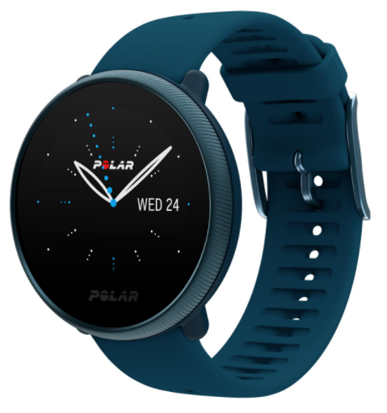

Наши сотрудники всегда готовы поделиться своим опытом, так как сами бегают полумарафоны, переплыли Босфор, готовятся к соревнованиям по триатлону!
Заботимся о здоровье
Мы работаем для того, чтобы Ваши занятия спортом шли на пользу Вашему здоровью и были в радость Вам и Вашим близким!
Учим бегать
Помогаем с обучением правильной технике бега! Дружим с крупнейшей школой бега в России - I LOVE RUNNING.
Получите бесплатную консультацию по подбору пульсометра
Просто заполните форму заявки и мы перезвоним вам в течении 10 минут
Каталог пульсометров
Для фитнеса
для бега
для триатлона
Polar FT1
Для первых шагов в тренировках, основанных на сердечном ритме
Вы услышите звуковое оповещение о нужном пульсе во время тренировки;
Вы увидите информативный графический индикатор целевых тренировочных зон пульса;
Также Вы увидите информацию о расходе калорий за тренировку;
Вы сможете посмотреть данные по 10 тренировкам.
4 750 руб.
4 500 руб.
Suunto M2
Для первых шагов в тренировках, основанных на сердечном ритме
Вы услышите звуковое оповещение о нужном пульсе во время тренировки;
Вы увидите информативный графический индикатор целевых тренировочных зон пульса;
Также Вы увидите информацию о расходе калорий за тренировку;
Вы сможете посмотреть данные по 10 тренировкам.
6 690 руб.
6 641 руб.
Polar FT1
Для первых шагов в тренировках, основанных на сердечном ритме
Вы услышите звуковое оповещение о нужном пульсе во время тренировки;
Вы увидите информативный графический индикатор целевых тренировочных зон пульса;
Также Вы увидите информацию о расходе калорий за тренировку;
Вы сможете посмотреть данные по 10 тренировкам.
4 750 руб.
4 500 руб.
Polar FT1
Для первых шагов в тренировках, основанных на сердечном ритме
Вы услышите звуковое оповещение о нужном пульсе во время тренировки;
Вы увидите информативный графический индикатор целевых тренировочных зон пульса;
Также Вы увидите информацию о расходе калорий за тренировку;
Вы сможете посмотреть данные по 10 тренировкам.
4 750 руб.
4 500 руб.
Suunto M2
Для первых шагов в тренировках, основанных на сердечном ритме
Вы услышите звуковое оповещение о нужном пульсе во время тренировки;
Вы увидите информативный графический индикатор целевых тренировочных зон пульса;
Также Вы увидите информацию о расходе калорий за тренировку;
Вы сможете посмотреть данные по 10 тренировкам.
6 690 руб.
6 641 руб.
Polar FT4
Для первых шагов в тренировках, основанных на сердечном ритме
Вы услышите звуковое оповещение о нужном пульсе во время тренировки;
Вы увидите информативный графический индикатор целевых тренировочных зон пульса;
Также Вы увидите информацию о расходе калорий за тренировку;
Вы сможете посмотреть данные по 10 тренировкам.
6 690 руб.
6 641 руб.

Polar Vantage V2
Легкие спортивные часы премиум-класса для мультиспорта
Часы Polar Vantage V2 позволят вам досконально изучить собственные возможности. В этих водонепроницаемых мультиспортивных часах с GPS собраны все полезные функции, разработанные компанией Polar, в том числе измерение ЧСС на запястье, GPS, тесты на эффективность и отслеживание восстановления.
45 750 руб.
43 500 руб.
Polar Vantage M2
Для первых шагов в тренировках, основанных на сердечном ритме
Мультиспортивные часы с GPS Polar Vantage M2 — это стильное устройство с отличными характеристиками и функциональностью. Данные, рекомендации и необходимые функции умных часов помогут вам стать сильнее и быть постоянно на связи. Polar Vantage M2 — ваш универсальный компаньон на пути к новым личным рекордам PR.
65 690 руб.
61 641 руб.
Polar Vantage V
Спортивные GPS-часы премиум-класса
Идите к победе, тренируясь с Polar Vantage V — спортивными часами премиум-класса для мультиспорта — умным партнером для настоящих профессионалов! Polar Vantage V — идеальный вариант, если вам нужен высококлассный помощник для тренировок по триатлону или марафону — водонепроницаемый и с длительным временем работы от аккумулятора.
45 750 руб.
43 500 руб.
Polar Grit X
Часы для спорта на открытом воздухе с датчиком GPS
Часы для спорта на открытом воздухе Polar Grit X — это безупречное сочетание прочного, долговечного и в то же время легкого дизайна, лучших функций для занятий, а также возможностей Polar Flow, идеальной платформы для отслеживания тренировок. Polar Grit X оснащены встроенным датчиком GPS, компасом и высотомером в тренировочном режиме.
45 750 руб.
43 500 руб.
Polar M430
Часы для бега с GPS
Оснащенный датчиком сердечного ритма на запястье, усовершенствованными функциями для бега и программой бега Polar, Polar M430 представляет собой высококлассные часы для бегунов, которые хотят получить больше.
65 690 руб.
61 641 руб.
Polar M200
Спортивные часы для бега с трекером активности 24/7
Отслеживайте свою физическую активность со спортивными часами для бега Polar M200. Благодаря точному измерению сердечного ритма на запястье и встроенному датчику GPS эти водонепроницаемые часы – ваш надежный партнер по спортивным занятиям.
65 690 руб.
61 641 руб.

Polar Ignite 2
Фитнес-часы со смарт-функциями
Умные фитнес-часы Polar Ignite 2 — элегантное и простое в использовании устройство. Эти удобные и красивые часы, которые можно носить не снимая, предоставят вам персонализированные рекомендации по тренировкам, сну и восстановлению.
14 750 руб.
13 500 руб.
Polar Ignite
Фитнес-часы с GPS и пульсометром на запястье
Polar Ignite — водонепроницаемые фитнес часы с улучшенным пульсометром на запястье и встроенным датчиком GPS. Этот многофункциональный партнер для тренировок подскажет вам верный путь к новым рекордам и достижениям. Polar Ignite даст вам не только полное представление о вашей активности за день, но и советы, как вести более сбалансированный образ жизни.
16 690 руб.
15 641 руб.
Polar Unite
Фитнес-часы с функциями измерения ЧСС на запястье
Polar Unite — водонепроницаемые фитнес-часы с улучшенным пульсометром на запястье и подключением GPS. Этот ультралегкий плавно закругленный фитнес-трекер поможет вам улучшить сон, повысить эффективность тренировок, вести сбалансированный образ жизни и быть всегда в форме.
14 750 руб.
13 500 руб.
Polar A370
Фитнес-трекер с мониторингом сердечного ритма
Это элегантный водонепроницаемый фитнес-трекер со спортивным дизайном, который помогает оставаться в ритме жизни в режиме 24/7 благодаря пульсометру для непрерывного измерения сердечного ритма, усовершенствованной технологии отслеживания сна и уникальных тренировочных функций от Polar.
14 750 руб.
13 500 руб.
Polar Verity Sense
Оптический датчик ЧСС
Polar Verity Sense — это оптический монитор сердечного ритма, который предоставляет различные варианты для просмотра и записи тренировок, не ограничивая ваших движений. Благодаря Bluetooth®, ANT+ и внутренней памяти вы можете подключать Polar Verity Sense к спортивным часам или приложению, чтобы следить за тренировкой в реальном времени. Кроме того, вы можете записать данные о тренировке во внутреннюю память и просмотреть их позже.
9 690 руб.
8 641 руб.
Polar H10
Датчик ЧСС
Если вам важны точность и возможности подключения, лучший выбор — датчик ЧСС Polar H10. Контролируйте свою ЧСС с максимальной точностью и подключайте датчик к различным устройствам для тренировок с помощью Bluetooth® и ANT+. Polar H10: отслеживание показателей сердечного ритма еще никогда не было настолько точным и адаптивным!
9 890 руб.
8 441 руб.
отзывы клиентов
Ирина Иванченко
2 полумарафона
Не знала, что себе купить - обратилась к ребятам из RunSmart - подобрали пульсометр, который подошёл именно под мои цели и финансовые возможности. Через некоторое время решила обновить гаджет - не раздумывая обратилась туда же.
Новые цели - новый гаджет! Спасибо, RunSmart!
Иван Сёмочкин
1 полумарафон
Крутая штука-пульсометр. Обычно без них бегал. Оказывается только хуже себе делал. Купил пульсометр, ещё в подарок получил тренировку. Со мной вместе провели первую тренировку, научили пользоваться новым гаджетом. Также объяснили основы анатомии, составили план тренировок на месяц вперёд.
С ними подготовился к своему первому полумарафону! Спасибо!!!
Юлия Дашкина
2 полумарафона
Долго не могла начать бегать, т.к. до этого несколько раз начинала, но становилось тяжело и я бросала. От друзей услышала о RunSmart и о беге с контролем пульса и решила попробовать.
Позвонила, ребята поинтересовались моими целями и подобрали очень интересный вариант со скидкой! Теперь бегаю и наслаждаюсь бегом! Пробежала уже 2 полумарафона и несколько более коротких забегов и не намерена останавливаться!


отзывы клиентов
Ирина Иванченко
2 полумарафона
Через некоторое время решила обновить гаджет - не раздумывая обратилась туда же.
Новые цели - новый гаджет!
Спасибо, RunSmart!
Иван Сёмочкин
1 полумарафон
Купил пульсометр, ещё в подарок получил тренировку. Со мной вместе провели первую тренировку, научили пользоваться новым гаджетом. Также объяснили основы анатомии, составили план тренировок на месяц вперёд.
С ними подготовился к своему первому полумарафону! Спасибо!!!
Юлия Дашкина
2 полумарафона
Позвонила, ребята поинтересовались моими целями и подобрали очень интересный вариант со скидкой! Теперь бегаю и наслаждаюсь бегом! Пробежала уже 2 полумарафона и несколько более коротких забегов и не намерена останавливаться!
Спасибо!!!